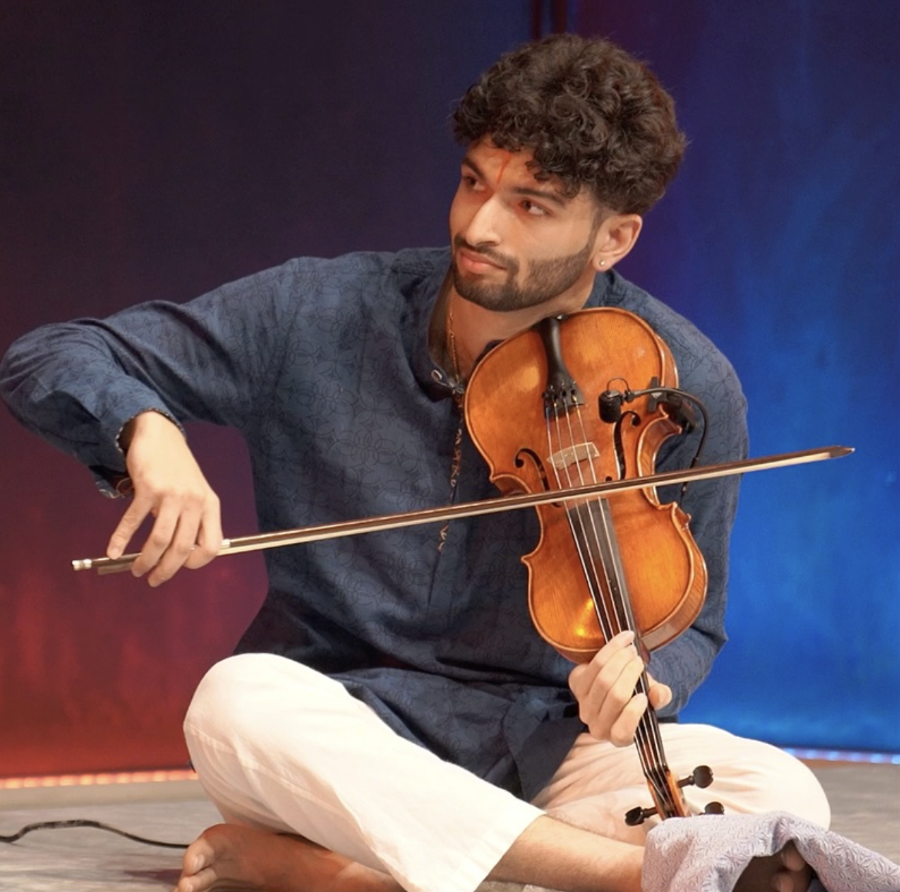

Carnatic Music
Carnatic violinist and accompanist to frontline artists across India and the US. Disciple of Sangeet Samrat Chitravina N Ravikiran.
Bio and Training
Music bio (PDF) →
Disciple of Sangeet Samrat Chitravina N Ravikiran since 2012, trained initially under his mother Vanitha Suresh and Violinist Shri C N Srinivasa Murthy.
Since his maiden concert as a soloist and accompanist to Shri Sikkil Gurucharan in July 2017, Sanjay has graduated into a sought-after accompanist, supporting frontline artists including Smt Alamelu Mani, Shri Chitravina N Ravikiran, Shri Raghavachary Dharuri, Dr. Rama Ravi, Dr. S Sowmya, Carnatica Brothers, Dr Gayathri Girish, Shri Palghat Ramprasad, Shri Sikkil Gurucharan, Akkarai Sisters, and Shri KS Vishnudev in major festivals and venues in India and the US, sharing the stage with legends such as Shri V V Subrahmanyam, Shri Trichy Sankaran, Shri Srimushnam Raja Rao, Shri Tiruvarur Bhakthavatsalam and Shri Patri Sathish Kumar.
He has also presented solos and duos with his brother Arjun Suresh (Chitravina), as well as orchestral Melharmony concerts with his guru Ravikiran (whom he has also assisted in arranging some of the pieces).
Concerts
Upcoming
2026/27 Chennai Music Season
Media
A selection of performances and recordings.
Naturosynth
Phantom of the Future is a 2026 indie-pop single by Naturosynth, a band based in Chicago. I co-wrote it with Arjun and Kieran Gopal as a one-off guest rather than a member of the band. The song is a departure from the Carnatic stage for me, and that is exactly why it represents a collaboration: the three of us shaped its melody, harmony, and production together, each bringing a different musical background to the table, and the result is something none of us would have written alone.
Booking and Contact
For concert bookings and collaborations, reach out by Email →